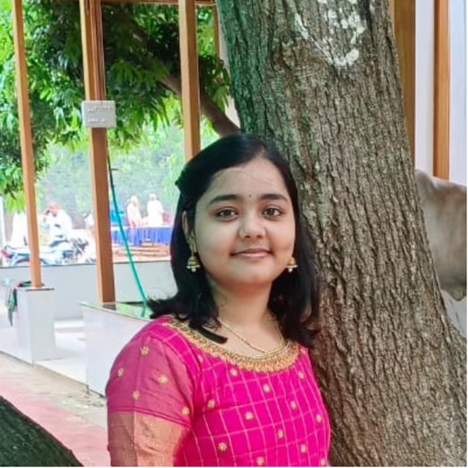

Building machine learning evaluation pipelines, deep learning experiments, and practical AI systems.
I am Ruchirinkil Marreddy, a master's student in Electrical and Computer Engineering at Purdue University. I combine machine learning research and engineering to study model behavior, build reproducible PyTorch-based experimentation workflows, and develop practical AI prototypes. I am currently seeking ML Research Engineer, Applied Scientist, and AI/ML Engineer roles.
About
I am a Graduate Researcher at Purdue University working on machine learning systems and deep learning analysis. My work spans optimization, training stability, generalization, and architecture-level behavior across models such as CNNs, vision transformers, and GPT-style networks.
I build reproducible experimentation pipelines in Python and PyTorch to test hypotheses, compare model behavior, and generate interpretable results. Alongside research, I enjoy building practical AI tools and end-to-end prototypes that connect technical ideas to usable systems.
I am especially interested in ML research engineering, model evaluation, scalable experimentation, and applied AI roles.
Core Areas
Training Dynamics
Analyze how neural networks learn over time across optimizers, architectures, and data settings.
Generalization and Stability
Design metrics and experiments to study robustness, convergence behavior, and reliable performance.
Model Analysis and Evaluation
Build tooling to inspect eigenspectra, alignment, internal module behavior, and training bottlenecks.
Research Engineering
Develop reproducible PyTorch workflows for model evaluation, debugging, and large-scale experimentation.
Skills
Languages
Python, C++, SQL, JavaScript
Frameworks & Libraries
PyTorch, Functorch, NumPy, OpenCV, FastAPI, Qiskit
ML Areas
Deep Learning, Model Evaluation, Training Dynamics, Reinforcement Learning, Multimodal Learning, Quantum ML
Tools
Git, GitHub, Linux, Jupyter, Matplotlib
Projects
NTK Alignment and Training Dynamics Across Modern Architectures
Built PyTorch-based experimental pipelines to analyze optimization and generalization behavior across MLPs, CNNs, vision transformers, and GPT-style models. Studied eigenspectra, label-kernel alignment, and convergence trends to compare theoretical predictions with empirical training behavior.
Module-Level Transformer Analysis Pipeline
Developed custom Functorch-based tooling to inspect attention and MLP blocks at the module level, track internal training behavior, and identify bottlenecks affecting optimization. Used these analyses to support architecture-level comparison and experiment design.
Transformer-Based Text-to-Image Generation
Built a text-to-image generation system inspired by CogView using a custom VQ-VAE tokenizer and transformer model trained on MS COCO. Worked on model design, training setup, and generation quality analysis for multimodal synthesis.
External Memory for Reinforcement Learning
Designed a notebook-based external memory mechanism for reinforcement learning agents operating in partially observable environments. Evaluated its impact on reward and task efficiency relative to standard policy-learning baselines.
Quantum Diffusion Denoising Probabilistic Model
Re-implemented QuDDPM using Qiskit and Python, leveraging low-depth quantum circuits for generative modeling and evaluating output quality using Maximum Mean Discrepancy loss.
AI WhatsApp Bot with FastAPI and Twilio
Built a WhatsApp chatbot prototype using FastAPI, Twilio WhatsApp Sandbox, and lightweight local language model integration. Designed the webhook-based backend, request handling flow, and response generation pipeline for conversational automation.
Experience
Purdue University · Graduate Researcher
Aug 2023 – Present
Conduct machine learning research on optimization, training dynamics, and generalization in modern neural networks. Build PyTorch and Functorch pipelines to analyze architecture-level and module-level behavior across CNNs, vision transformers, and GPT-style models.
Purdue University · Graduate Teaching Assistant
Jan 2025 – May 2026
Supported lab instruction, grading, and student guidance across coursework in graphical communication, spatial analysis, and power electronics. Helped students debug technical work and improve engineering communication.
Zoom Video Communications · Service Engineer
Jul 2022 – Jul 2023
Resolved production issues across Zoom product pipelines and supported technical debugging for internal systems. Built automation tools to improve issue triage and operational efficiency across engineering workflows.
UST Global · Data Science Intern
Jun 2021 – Jul 2021
Built an OpenCV- and machine learning-based interface to automate electricity meter bill generation from uploaded meter images. Worked on image processing, prediction flow, and user-facing automation for a practical utility use case.
Publications & Talks
WiE 5th Annual Symposium, Purdue
Presenter · February 2026
Presented research on training dynamics and label-NTK alignment in modern neural networks.
Research Manuscript in Preparation
2026
Preparing a research manuscript on spectral alignment, optimization, and generalization in modern neural networks.
Beyond Work
I like connecting theory and practice
I enjoy turning mathematical questions in deep learning into experiments, plots, and testable engineering insights.
I work across multiple AI areas
My experience spans deep learning theory, reinforcement learning, multimodal generation, quantum ML, and practical AI tooling.
I enjoy building usable systems
Beyond research, I like building end-to-end prototypes that turn technical ideas into real workflows and applications.
I care about communication
I enjoy presenting technical ideas clearly and making complex work understandable for different audiences.
Resume
For a full summary of my experience, projects, and technical skills, view my resume below.
Contact
I am currently seeking ML Research Engineer, Applied Scientist, and AI/ML Engineer opportunities.
Email: rmarred@purdue.edu
GitHub: github.com/ruchimarreddy